From the bell court to the last casting
Arrival gives way to a sanctuary, a working court and a controlled watercourse. The ore loop returns through a damaged slag margin before the final foundry. Every visible model is original; no authentic cache mesh or texture fills the scene.
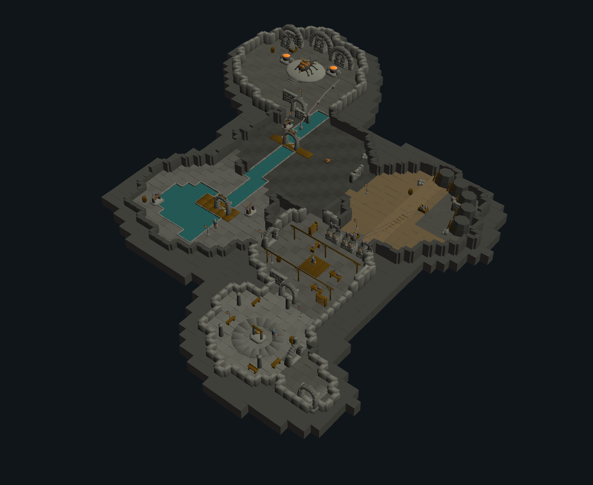
Architectural overview · native camera, original terrain and assetsAsset IDs, placement, conservative collision proxies and intended anchors · 955-cell connectivity assessment · Reproducible relative native scene
The Descent
The stair mouth narrows into a supported service tunnel. A warning bell and supply route lead toward safety.
The stair/threshold silhouettes identify the entrance, but the outer rock boundary remains visibly cut away.
Bellkeeper Sanctuary
A worn bell court, repaired masonry, benches and warm lanterns make a recognizable place of refuge. The workshop flues are visible through its northern threshold.
Radial paving, the bell and benches define refuge. Floor slab regularity and peripheral detail need further art work.
The Working Court
Working benches face an annealing wall. Stock, carts and a paired rail line explain the flow from ore to finished parts.
Stock, timber framing, repair apron, retorts and carts explain the production sequence. The open court remains sparse.
The Lock and Reservoir
The open reservoir feeds a controlled runoff channel. Pumps, raised service gates and two crossings create an exploration loop between banks.
Raised gates and modeled crossings preserve a bank route; exact player clearance and water-edge clipping are untested.
The Fracture Gallery
A broken rock face, loaded tubs and a rail curve expose the resource source. The lower service route rejoins the slag channel.
A new worked headwall and braces explain extraction. The flat rock treatment and broad brown floor still need geological refinement.
Black Runoff
Cooled slag, a damaged service bay and the second sluice make the transition toward danger visible. A narrow inspection route follows the water.
The damaged masonry and scavenger mark danger. Additional authored industrial waste and terrain transitions are needed.
The Last Casting
A broad entry opens toward a raised casting ring and an original sluice-crowned creature. Retorts, cradled vessels and return pipes terminate the industrial sequence.
Supported vaults and cradled vessels frame the original creature. Arena scale is visual only; no encounter or collision is implemented.
All seven original actions in the final foundry
Every native tick, including the death hold, is rendered through the same scene path. Identical image holds retain their original durations. Walking world travel is explicit; contact defects are retained.
attack
attack · native environment motiondeath
death · native environment motionhit
hit · native environment motionidle
idle · native environment motionsluice_roar
sluice_roar · native environment motionwalk
walk · native environment motionwalk_entry
walk_entry · native environment motionSix separately authored designs
Each uses independent geometry, original choreography and native materials. Five static views and all seven supported action previews are supplied. Numerical agreement verifies conversion, not artistic quality.
Basalt Hearthbearer
A basalt porter carries a repaired ceramic furnace as its own anatomy. Asymmetric exhausts, a narrow mask and open hands distinguish it from the reference giant. Mass, value hierarchy and deliberate anticipation are the lessons; no reference body/gear/frame is reused.
636 vertices · 1112 faces · model 1101564 · 429 native pose checks · manifest
attack
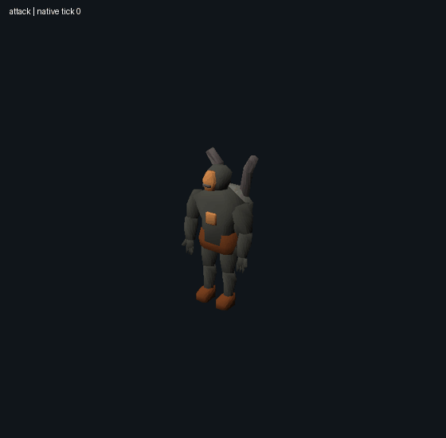
attackdeath
deathfurnace_pulse
furnace_pulsehit
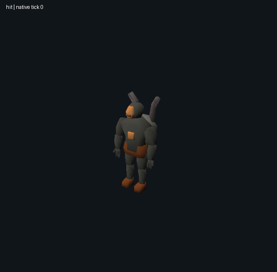
hitidle
idlewalk
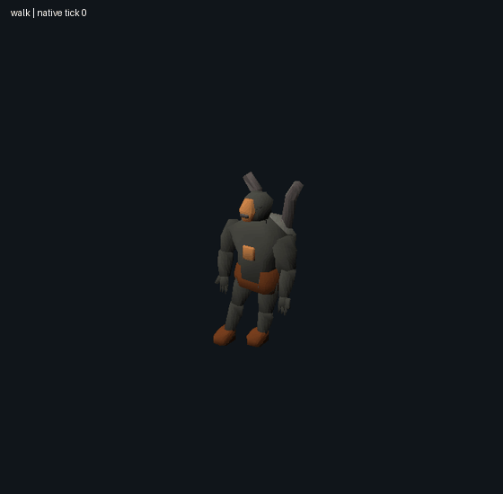
walkwalk_entry
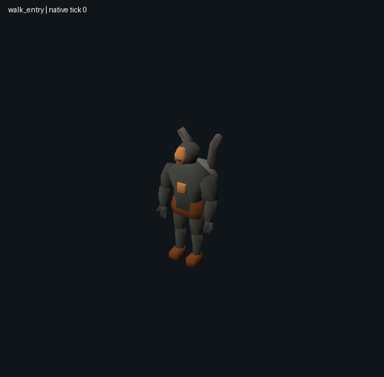
walk_entryWalking contact remains under review. Mean stance drift: 4.81 native units; floating stance-foot observations: 0. Body-support and equipment checks use declared proxies. See the motion report for full results.
Bellows Harrier
A filter-masked, copper-braced bellows creature learns appendage ownership and aggressive preparation from complex humanoids. Grounded legs, planar industrial membranes and a fan crest create a separate silhouette without demonic horns, spear or recognizable equipment layout.
628 vertices · 1080 faces · model 1101566 · 429 native pose checks · manifest
attack
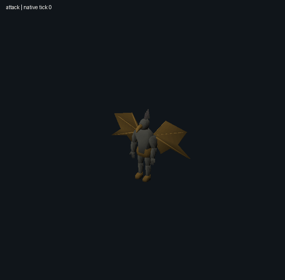
attackbellows_burst
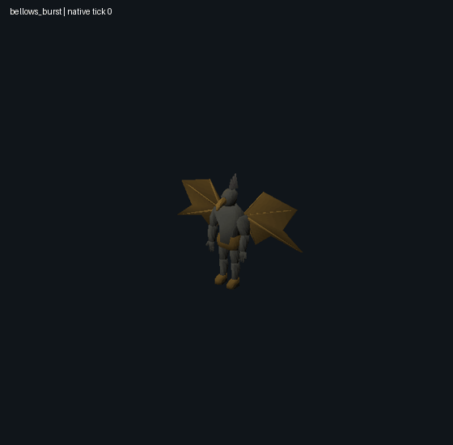
bellows_burstdeath
deathhit
hitidle
idlewalk
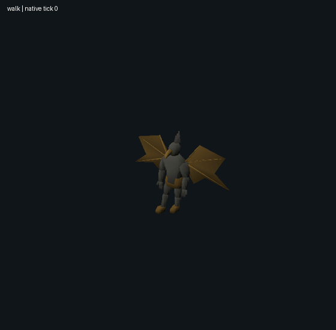
walkwalk_entry
walk_entryWalking contact remains under review. Mean stance drift: 3.11 native units; floating stance-foot observations: 0. Body-support and equipment checks use declared proxies. See the motion report for full results.
Counterweight Warden
Armor mass and forceful action are transferred to a four-legged industrial guardian. Its ox-like chassis, counterweights and head-driven drop differ from a two-armed armored boss; no source mesh, color-region recipe or motion is reused.
826 vertices · 1494 faces · model 1101565 · 429 native pose checks · manifest
attack
attackcounterweight_drop
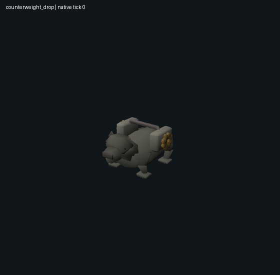
counterweight_dropdeath
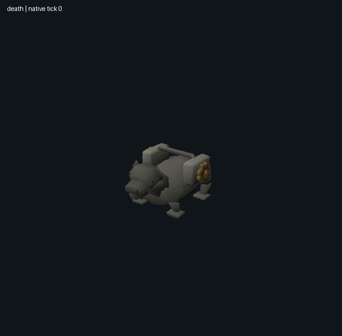
deathhit
hitidle
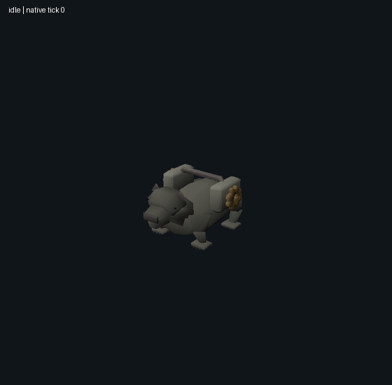
idlewalk
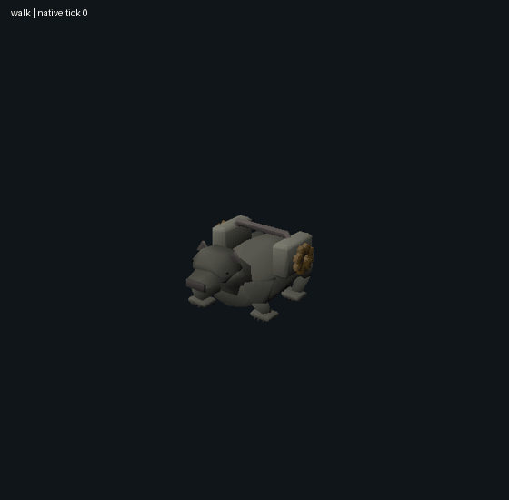
walkwalk_entry
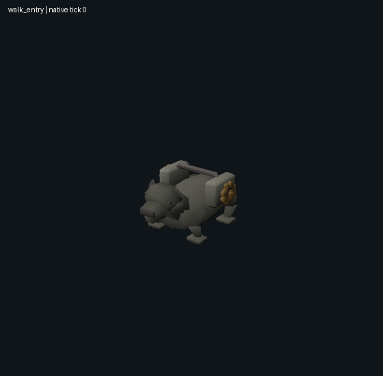
walk_entryWalking contact remains under review. Mean stance drift: 2.01 native units; floating stance-foot observations: 0. Body-support and equipment checks use declared proxies. See the motion report for full results.
Crown-of-Sluices
The original Kilnback lineage becomes a large six-legged sluice organism with an independently pivoting five-pipe crown. A staged presentation and shell hierarchy are the lessons; no vampire body, eight-legged silhouette, unique equipment or source phase animation is copied.
850 vertices · 1424 faces · model 1101568 · 429 native pose checks · manifest
attack
attackdeath
deathhit
hitidle
idlesluice_roar
sluice_roarwalk
walkwalk_entry
walk_entryWalking contact remains under review. Mean stance drift: 5.29 native units; floating stance-foot observations: 10. Body-support and equipment checks use declared proxies. See the motion report for full results.
Glasswake Surveyor
A slender pale ceramic surveyor carries a split acoustic measuring fork and a blue-grey mantle. Equipment integration and multiple readable actions are transferred into a separate non-Egyptian industrial identity; no reference spear/sword arrangement or cached animation is reused.
674 vertices · 1176 faces · model 1101569 · 429 native pose checks · manifest
frontsiderearquartergameplay attack
attackdeath
deathhit
hitidle
idlesounding_sweep
sounding_sweepwalk
walkwalk_entry
walk_entryWalking contact remains under review. Mean stance drift: 2.57 native units; floating stance-foot observations: 0. Body-support and equipment checks use declared proxies. See the motion report for full results.
Siltcoil Matriarch
An axial, limbless silt-filtering matriarch has overlapping ceramic segments and an opening sieve jaw. Serial motion and an unusual body plan are the lessons; it has no copied wings, encounter poison animation or reference anatomy.
742 vertices · 1352 faces · model 1101567 · 429 native pose checks · manifest
frontsiderearquartergameplay attack
attackdeath
deathhit
hitidle
idlesieve_breach
 sieve_breach
sieve_breachwalk
walkwalk_entry
walk_entryWalking contact remains under review. Mean stance drift: 0 native units; floating stance-foot observations: not applicable. Body-support and equipment checks use declared proxies. See the motion report for full results.
What the evidence establishes
The immutable examination exposed a real failure: all 50 first-attempt classic role clips had stationary candidates because group labels were dropped. Later correction is a separate development retest. Akkha weighted reconstruction motion remains unsupported. Coarse silhouette scores do not establish faithful facial, material or equipment construction.
| Case / form | NPC | Mean five-view IoU | Outcome |
|---|
| akkha / spear_and_sword_states | 11789 | 0.730 | Fidelity under review |
| bandos / standard_encounter | 2215 | 0.852 | Fidelity under review |
| fire-giant / club_variant | 2075 | 0.831 | Fidelity under review |
| verzik / phase_1 | 8370 | 0.784 | Fidelity under review |
| verzik / phase_2 | 8372 | 0.757 | Fidelity under review |
| verzik / phase_3 | 8374 | 0.660 | Fidelity under review |
| verzik / terminal_form | 8375 | 0.909 | Fidelity under review |
| xarpus / absorb_form | 8338 | 0.854 | Fidelity under review |
| xarpus / active_form | 8340 | 0.854 | Fidelity under review |
| xarpus / terminal_form | 8341 | 0.821 | Fidelity under review |
| zamorak / standard_encounter | 3129 | 0.824 | Fidelity under review |
Separate post-exam development
The group correction covers 44 unique form/sequence clips and 6097 native samples. Coordinates and face alpha agree with independent tracing. Static-candidate failures: 0. Source classic controls are reused privately; weighted retargeting remains unsupported.
A further static material/partition proposal improves mean color error in seven forms and regresses four. It remains unapproved, with no new motion claim. Motion audit · Static proposal results · Actionable visual assessment
51 preserved static variants / 255 views; 26 classic sets / 468 matched timestamps; 43 unit tests. Six original bosses reproduce their models, 762 classic payload files and 30 views exactly. These checks establish preservation and conversion reliability.
Catalogue preservation · Additional fixtures and previous original · Six-boss reproduction · Motion defects · Frozen examination summary · All 38 original assets · Status and limitations
Authentic source resources, reconstruction derivatives and matched source imagery are retained only in the private local review. Existing functional Cinderworks, the live map, earlier concepts and the original cache are preserved. Final artistic approval remains with the user.